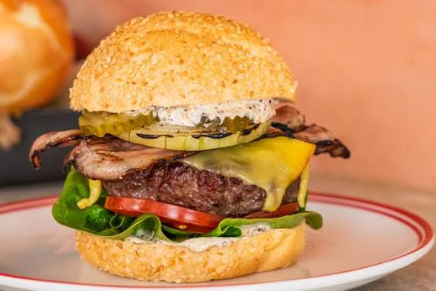

Beef Burger

Ingredient
- 1. 1 pound ground beef
- 2. 1 onion, chopped
- 3. 2 cloves garlic, minced
- 4. 1 (24-ounce) jar tomato sauce
- 5. 1 (6-ounce) can tomato paste
Instructions
- 1. Preheat the oven to 375°F (190°C).
- 2. In a large skillet, cook the ground beef over medium heat until browned. Drain excess fat.
- 3. Add the chopped onion and minced garlic to the skillet and cook until softened.
- 4. Stir in the tomato sauce, tomato paste, dried basil, dried oregano, salt, and pepper. Simmer for 15-20 minutes.
- 5. In a separate bowl, mix together ricotta cheese, egg, and grated Parmesan cheese.
- 6. Spread a thin layer of meat sauce on the bottom of a 9x13-inch baking dish.
- 7. Place a layer of lasagna noodles over the sauce.
- 8. Spread half of the ricotta cheese mixture over the noodles.
- 9. Sprinkle a layer of shredded mozzarella cheese over the ricotta mixture.
- 10. Repeat layers: meat sauce, noodles, ricotta mixture, mozzarella cheese.
- 11. Finish with a final layer of meat sauce and top with remaining mozzarella cheese.
- 12. Cover with aluminum foil and bake for 25 minutes.
- 13. Remove foil and bake for an additional 25 minutes or until cheese is bubbly and golden brown.
- 14. Let the lasagna rest for 10-15 minutes before serving.
home